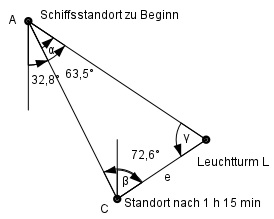

Aufgabe 211 Ein Schiff fährt einen Kurs S 32,8° O und peilt einen Leuchtturm in S 63,5° O an. Nach einer Weiterfahrt von 1 h 15 min mit einer Geschwindigkeit von 8 sm/h peilt es ihn unter N 72,6° O an. Wie groß ist die Entfernung e des Schiffes vom Leuchtturm?

Zurückgelegter Weg nach 1 h 15 min: 15 15 min = ---- h = 0,25 h 60 1 h 15 min = 1,25 h s v = --- | *t t s = v * t = 8 sm/h * 1,25 h = 10 sm = AC α = 63,5° - 32,8° = 30,7° β = 72,6° + 32,8° (wegen Z-Winkel) = 105,4° γ = 180° - α – β = 180° - 30,7° - 105,4° = 43,9° Im Dreieck ACL: Fall SWW: Sinussatz: AC e --------- = ------- | *sinα sin γ sin α AC * sin α 10 sm * sin 30,7° e = ------------- = ------------------- = sin γ sin 43,9° 10 sm * 0,5105 = ----------------- = 7,4 sm 0,6934